측량및지형공간정보기사 (2003-03-16 기출문제)
1과목: 측지학 및 위성측위시스템
1. 다음 중 지각균형(Isostasy)이론과 관련된 설명으로 옳은 것은?
- 지형의 凹凸에 관계없이 지각은 지하구조에 대하여 일정한 압력을 준다.
- 지각은 정역학적으로 평형을 이루기 위하여 지각의 변동이 발생한다.
- 지표면의 凹부분은 지각 지하구조의 질량이 부족한 반면, 凸부분에서는 질량의 여분이 있다.
- 지각 균형이론은 소규모의 지각구조에 대하여 잘 성립한다.
(정답률: 75%)

2. 지오이드를 옳게 설명한 것은?
- 지구의 반지름을 6,370㎞로 본 구면을 말한다.
- 지구를 회전 타원체로 본 표면이다.
- 지구 그대로의 표면이다.
- 평균해면으로 전 지구를 덮었다고 생각할 때의 가상 곡면이다.
(정답률: 89%)
3. 기차(氣差)및 구차(球差)에 대한 설명 중 틀린 것은? (단, L : 두점간의 거리, R : 지구곡률반경)
- 두점간의 고저차를 구하고자 할 때와 거리가 상당히 떨어져 있을 때 지구표면이 구상(球狀)이므로 일어나는 오차를 구차라 한다.
- 기차와 구차의 합을 양차라하며 두점에서 각각 서로 시준하여 소거 시킬 수 있다.
- 공기의 온도,기압,기온 등에 의하여 시준선에서 생기기 쉬운 현상을 기차라 한다.
- 기차의 식은 L2/2R 이고 구차는 굴절계수 K를 곱한 -(K∙L2)/2R 로 표시된다.
(정답률: 74%)
4. 반경 2m인 구면상의 구면삼각형 면적이 0.213m2일 때 이 구면삼각형의 구과량은?
- 1° 02′ 32″
- 2° 03′ 14″
- 3° 03′ 04″
- 4° 12′ 09″
(정답률: 85%)
5. 다음중 지구좌표에 속하지 않는 것은?
- 지평좌표
- 경위도좌표
- UTM좌표
- UPS좌표
(정답률: 80%)
6. 거리와 방향을 관측하여 평면 위치를 관측할때, 10″ 의 방향오차로 인해 15km에 생기는 평면위치의 오차는?
- 72.7cm
- 86.6cm
- 97.7cm
- 104.7cm
(정답률: 27%)
7. 다음은 중력이상에 관한 설명이다. 잘못된 것은?
- 중력이상이란 보정된 기준면의 중력값과 표준중력의 차를 나타낸다.
- 중력이상의 주된 원인은 지하의 밀도가 고르게 분포되어 있지 않기 때문이다.
- 밀도가 큰 물질이 지표면 가까이 있을 때는 음(-)값을 갖는다.
- 중력이상을 해석함으로써 지하 구조나 지하 광물체의 탐사에 이용된다.
(정답률: 75%)
8. 적위가 +20° 인 별의 남중고도가 70° 였다면 관측지점의 위도는?
- 10° N
- 20° N
- 30° N
- 40° N
(정답률: 77%)
9. 다음 천문측지를 설명한 내용중 옳은 것은?
- 적경이란 춘분점으로부터 어느 천체의 시간권의 발까지 적도를 따라 서쪽으로 잰 각거리이다.
- 탈고트법이란 동일고도의 두변을 관측할 때 각각의 적위와 천정거리를 이용하여 위도를 결정하는 방법이다.
- 주극성이란 천구북극으로부터 천극거리가 관측자의 위도 보다 커서, 하루종일 지평선 위에 나타나지 않는 별이다.
- 1항성일은 춘분점이 연속해서 같은 자오선을 2번 통과하는데 걸리는 시간이며, 24시간보다 클 때도 있다.
(정답률: 50%)
10. 다음 중 틀리는 것은?
- 천문좌표에서 관측자의 연직선과 지평면을 기준으로 하는 것을 지평좌표라 한다.
- 좌표축과 수직인 적도면을 기준으로 하는 것을 적도 좌표라 한다.
- 은하계의 적도면을 기준으로 하는 것을 적도좌표라 한다.
- 지구공전 궤도면을 기준으로 하는 것을 황도좌표라 한다.
(정답률: 69%)
11. 인공위성을 이용한 측량방법이 아닌 것은?
- 광학방식
- 전파방식
- NNSS방식
- UTC방식
(정답률: 72%)
12. 다음 중 위성측량의 관측사항이 아닌 것은?
- 위성까지의 거리
- 위성의 측지좌표
- 위성의 거리변화율
- 위성의 방향
(정답률: 53%)
13. 지자기의 3요소에 해당되지 않는 것은?
- 복각
- 편각
- 수평분력
- 연직분력
(정답률: 86%)
14. 넓은 지구상에서 점들의 상호위치관계를 정하거나 경도 및 위도를 결정하는 측량은?
- 지형측량
- 스타디아측량
- 육분의측량
- 천문측량
(정답률: 58%)
15. 다음 측지학에 관한 용어에서 틀린 것은?
- 천구의 북극은 지구자전축과 천구의 교점에서 북쪽을 말한다.
- 천구의 자오선은 천구의 북극을 포함한 수직권이다.
- 천구의 지평선은 천정과 천저를 잇는 직선과 수직인 대원이다.
- 천정은 관측지점의 연직선이 천구와 아래쪽에서 만난다.
(정답률: 80%)
16. 다음 중 해상의 수평위치 결정방식이 아닌 것은?
- Echo Sounder
- Raydist
- Omega
- Decca
(정답률: 84%)
17. 다음 설명중 UTM좌표계에 대해 맞는 것은?
- 각 구역은 서쪽으로 6° 간격으로 1부터 번호를 붙인다.
- 지구 전체를 경도 6° 씩 60구역으로 나눈다.
- 위도는 남, 북위 85° 까지만 포함한다.
- 위도 80° 이상의 양극지역의 좌표도 포함된다.
(정답률: 74%)
18. 해안선을 결정하기 위한 기준면으로 사용되는 것은?
- 평균해수면
- 평균최저간조면
- 평균최고만조면
- 텔루로이드면
(정답률: 70%)
19. 지구의 형상을 결정하기 위하여 사용되는 지표면이 아닌 것은?
- 지오이드
- 지구 타원체
- 의사 지오이드
- 지구 구면체
(정답률: 60%)
20. 지표면상에서 북극성의 천장거리를 측정하여 53° 의 측정값을 얻었다. 이 지점의 위도는 얼마인가?
- 북위 53°
- 북위 37°
- 남위 53°
- 남위 37°
(정답률: 69%)
2과목: 응용측량
21. 토탈스테이션(total station)을 이용한 단곡선 설치에 있어서 가장 널리 사용되는 편리한 방법은?
- 좌표법
- 중앙종거법
- 지거설치법
- 종거에 의한 설치법
(정답률: 67%)
22. 그림과 같은 곡선의 시점에서 종점을 시준할 수가 없어서 ∠L, ∠M, ∠N, ∠O, ∠P를 측정 하였다. 이각들의 합계가 634° 30' 일때 노선의 교각(交角) I 는?
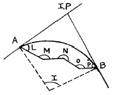
- 85° 30'
- 94° 30'
- 75° 30'
- 90° 00'
(정답률: 63%)
23. 그림과 같은 △ABC의 면적을 2등분하려면
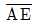
의 얼마로 하여야 하는가?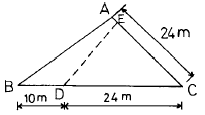
- 5m
- 6m
- 7m
- 8m
(정답률: 67%)
24. 하천측량에서 다음의 유량(流量)관측에 관한 설명에서 적당하지 않은 것은?
- 유량관측은 유속계와 같은 기계관측과 부자(浮子)에 의한 관측이 있다.
- 같은 단면내에서는 수심이나 위치에는 상관없이 유속의 분포는 일정하다.
- 유속계의 방법은 주로 평수위시가 좋고 부자의 방법은 홍수시에 많이 이용된다.
- 보통 하천이나 수로의 유속은 구배, 유로의 형태, 크기, 수량, 풍향등에 따라 변한다.
(정답률: 80%)
25. 유량을 추정하기 위하여 수위관측 지점을 선정할 때 고려할 사항으로 적합하지 않은 것은?
- 불규칙한 흐름이나 수위변화가 없는 지점
- 하상변화가 작고 상,하류가 약 100∼200m 되는 직선인 지점
- 평시나 홍수시에도 관측이 편리한 지점
- 교각 또는 구조물에 인접한 지점
(정답률: 86%)
26. 경관 평가지표에 의한 정량적 해석시 시설물의 전체 형상을 인식할 수 있고 경관의 주체로 적당한 수평시각은?
- 10° ＜ θH ≦ 30°
- 60° ＜ θH
- 30° ＜θH ≦50°
- 0° ≦θH ≦20°
(정답률: 71%)
27. 다음 중 면적측량에서 폐트래버스의 면적을 계산할때에 이용되는 배횡거(D.M.D)에 관한 설명으로 틀린 것은?
- 임의의 측선에 대한 배횡거는 하나 앞 측선의 배횡거에 하나 앞 측선의 위거와 해당 측선의 경거를 합치면 된다.
- 좌표의 종측에 접하는 시발측선의 배횡거는 해당 측선의 경거의 값과 같다.
- 폐합트래버스의 마지막 측선의 배횡거는 그 측선의 경거와 값이 같으나 부호가 반대이다.
- 각 측선의 배횡거와 위거를 곱한 것을 대수화 하면 폐합트래버스의 배면적이 된다
(정답률: 53%)
28. 기본대칭형 클로소이드곡선 설치에 있어서 완화곡선장 L=100m, 원곡선장 Lc=36m, 클로소이드곡선의 파라메타 A=50m 일 때 전곡선장은?
- 236m
- 172m
- 161m
- 136m
(정답률: 62%)
29. 운동장 예정부지를 측량한 결과, 10m 격자점의 표고가 그림과 같았다. 계획고를 10m로 할 때, 토량은 얼마인가?
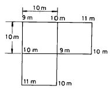
- 절토 50m3
- 성토 50m3
- 절토 75m3
- 성토 75m3
(정답률: 67%)
30. 종단선형의 설계방법 중 틀린 것은 어느 것인가?
- 장대터널에서 자동차의 배기가스의 배제를 위하여 최대 오르막구배를 4.0%로 하고 특별한 경우에도 5.0%를 넘지 않도록 한다.
- 구배변화가 작을 때의 종단곡선은 될 수 있는한 크게 취해야 한다.
- 종단구배는 완만할수록 좋지만 노면의 배수를 위해서 0.3%∼0.5%의 구배로 하는 것이 좋다.
- 연장이 긴 연속된 오르막 구간에는 오르막구배가 끝나는 정상부근에서 구배를 비교적 완만하게 하는 것이 좋다.
(정답률: 7%)
31. 반경 10㎝의 구면상에서 구면삼각형 ABC의 각을 측정하니 A=75° , B=66°, C=49°이었다. 구면삼각형의 면적은 얼마인가?
- 14.45cm2
- 15.45cm2
- 16.45cm2
- 17.45cm2
(정답률: 77%)
32. 축척 1/25,000의 도면상에서 어떤 지역의 면적을 구하였더니 40.5cm2였다면 실제면적은 대략 얼마인가?
- 453ha
- 353ha
- 253ha
- 153ha
(정답률: 65%)
33. 광산의 갱내측량에 사용되는 트랜싯은 다음의 사항을 구비해야 하는데 다음중 중요하지 않은 것은?
- 이심(移心)장치를 해서 상· 하 어느 측점에 대해서도 언제나 빨리 구심할 수 있어야 한다.
- 상부 고정나사와 하부 고정나사의 형상을 달리하여 어두운 갱내에서도 손쉽게 구별할 수 있어야 한다.
- 수평눈금판의 눈금은 한방향으로 0°-360° 로 표시해야 하고 연직눈금은 반원식(半園式)이어야 한다.
- 주망원경의 위나 옆면에 보조망원경을 장치할 수 있어야 한다.
(정답률: 74%)
34. 다음 터널측량에 대한 설명중 옳지 않는 것은?
- 갱내의 곡선설치는 일반적으로 지상에서와 같다.
- 지하측량에는 지하중심측량과 지하수준측량으로 나눈다.
- 터널의 길이방향은 삼각측량 또는 트래버스측량으로 행한다.
- 갱내측량에서는 기계의 십자선 및 잣눈표척등에 조명이 필요하다.
(정답률: 20%)
35. 삼각형의 세변을 측정해서 그림과 같은 결과를 얻었다. 이 삼각형의 면적은?
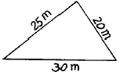
- 180.0m2
- 20.5m2
- 248.0m2
- 262.5m2
(정답률: 75%)
36. 우리나라 철도에서 적용하는 경사도의 표시방법은?
- 1/n
- n/10
- n/100
- n/1,000
(정답률: 74%)
37. 하천을 횡단하기 위하여 그림과 같은 교호수준측량을 실시하였다. B의 표고는 얼마인가? (단, A의 표고는 9.446m 이다.)
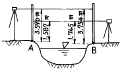
- 9.279m
- 9.282m
- 9.285m
- 9.288m
(정답률: 22%)
38. 그림과 같이 AC 및 BD 사이에 곡선을 설치하고자 한다. 이 때 교점 P에 장애물이 있어 교각(交角)을 측정하지 못하였기 때문에 그림에 표시한 바와 같은 값을 얻었다. 곡선의 반지름이 300m라면 C점에서부터 곡선의 시점까지의 거리는 얼마인가?
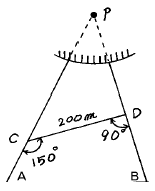
- 288.68m
- 278.68m
- 268.68m
- 258.68m
(정답률: 57%)
39. 경사가 60° 이고 사거리가 30m인 사갱에서 수평각을 측정 할 경우 시준선에 직각으로 4mm의 시준오차가 있었다면 수평각의 오차는 얼마인가?
- 25.502″
- 26.502″
- 27.502″
- 28.502″
(정답률: 42%)
40. 단곡선 설치법 중에서 터널내 또는 임야지대에서 어느 방법이 가장 좋은가?
- 현편거법
- 교각법
- 편각설치법
- 중앙종거법
(정답률: 58%)
3과목: 사진측량 및 원격탐사
41. 다음 중 사진측량의 특성으로 옳지 않은 것은?
- 정밀도가 균일하다.
- 근접하기 어려운 대상물을 측정하기 용이하다.
- 4차원 측량이 가능하다.
- 일괄적인 연속작업으로 처리되므로 분업화가 어렵다.
(정답률: 80%)
42. 비행기의 운항속도 180km/h, 촬영고도 3,000m, 렌즈의 초점거리 210mm, 허용 흔들림을 0.02mm로 촬영계획할 때 최장 노출시간은 몇초로 하면 좋은가?
- 1/125초
- 1/150초
- 1/175초
- 1/200초
(정답률: 60%)
43. 절대표정(absolute orientation)에 최소한 소요되는 기준점의 수는 다음 어느것이 적합한가?
- 2점의(x,y,z)좌표 및 1점의 (z)좌표, 혹은 2점의 (x,y) 좌표와 3점의 (z)좌표
- 2점의 (x,y)좌표 및 1점의 (z)좌표
- 3점의 (x,y,z)좌표
- 3점의 (x,y)좌표 및 2점의 (z)좌표
(정답률: 67%)
44. 다음의 사진기준점 측량방법 중 사진을 기본단위로 하여 조정하는 방법은?
- 광속조정법
- 독립모형조정법
- 다항식법
- 스트립조정법
(정답률: 50%)
45. 비행고도 3,000m에서 수직으로 촬영된 사진상에 표고 120m의 지점이 주점으로부터 5cm 되는 곳에 찍혔다고 하면 고저차에 의한 상(像)의 편위량은?
- 1 mm
- 2 mm
- 3 mm
- 4 mm
(정답률: 50%)
46. 다음은 영상레이다(SAR)에 관한 설명이다. 옳지 않은 것은?
- SAR는 능동적 센서이다.
- SAR는 구름이 있어도 영상을 취득할 수 있다.
- SAR로 지형의 표고는 구할 수 있지만 지형의 변위는 구하지 못한다.
- SAR 영상의 밝기값에 영향을 주는 요소중 하나는 지표면의 거칠기이다.
(정답률: 29%)
47. 상호표정에 있어서 과잉수정계수는?
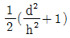
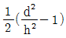
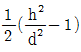
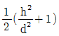
(정답률: 63%)
48. 한쌍의 항공사진을 좌우로 떼어놓고 실체시하면 토지의 기복은 어떻게 되는가?
- 대체로 바른 모양으로 보인다.
- 고저를 분별하기 힘들다.
- 별차가 없다.
- 비고감(比高感)이 커진다.
(정답률: 75%)
49. 항공사진측량에서 정의하는 산악지역이란 무엇인가?
- 산이 차지하는 면적이 한 사진의 60% 이상인 지역
- 사진상 지형의 고저차가 촬영고도의 10% 이상인 지역
- 산이 차지하는 면적이 한 사진의 70% 이상인 지역
- 사진상 지형의 고저차가 촬영고도의 20% 이상인 지역
(정답률: 80%)
50. 다음의 항공삼각측량(aerial triangulation)의 오차조정 방법 중 가장 능률적이고 정밀한 것은?
- 최소 제곱법
- 스트립 조정(strip adjustment)
- 기계적 블록조정(analogue block adjustment)
- 해석적 블록 조정(analytical block adjustment)
(정답률: 67%)
51. 축척 1/20,000으로 촬영한 연직사진을 C-계수가 1,800인 도화기로써 도화할 수 있는 최소등고선 간격이 1.8m이었다. 사진의 크기가 23cm× 23cm, 횡중복도 30%, 종중복도 60%일 때 기선고도비를 구한 값은?
- 0.57
- 0.75
- 1.00
- 1.28
(정답률: 65%)
52. 동서 20km, 남북 10km의 장방형 지역을 촬영하는데 한 모형의 피복면적이 20km2 일 때 소요되는 사진 매수는? (단, 안전율은 30% 임)
- 10매
- 13매
- 20매
- 7매
(정답률: 63%)
53. 사진화면의 크기 23cm× 23cm인 사진기로 평탄하고 수평한 토지의 연직사진을 촬영하였다. 비행고도가 4,500m이고 촬영된 면적이 47.61km2 일 때 사진의 초점거리는?
- 15cm
- 21cm
- 25cm
- 30cm
(정답률: 15%)
54. 원격탐사(Remote Sensing)의 특징으로 옳지 않은 것은?
- 짧은 기간내에 넓은 지역을 동시에 관측할 수 있으며 반복관측이 가능하다.
- 회전주기가 일정하므로 원하는 지점 및 시기에 관측이 용이하다.
- 관측이 좁은 시야각으로 얻어진 영상은 정사투영에 가깝다.
- 탐사된 자료가 즉시 이용될수 있으며 재해, 환경문제 해결에 편리하다.
(정답률: 25%)
55. Passive Sensor(수동적감지기) 중 지표로부터 반사되는 전자기파를 렌즈와 반사경으로 집광하여 필터를 통해 분광한 다음 파장별로 구분하여 각각의 영상을 테이프에 기록하는 감지기는?
- HRV
- Laser
- MSS
- SLAR
(정답률: 67%)
56. 상호표정과 가장 관계가 깊은 것은?
- x 방향 시차를 소거하는 것
- y 방향 시차를 소거하는 것
- z 방향 시차를 소거하는 것
- x - y 방향 시차를 소거하는 것
(정답률: 67%)
57. 항공사진의 중복도는 종중복도 60%, 횡중복도 30% 가 표준이지만 필요한 경우 최대 몇 % 까지 중복시킬 수 있는가?
- 종중복도 65%, 횡중복도 35%
- 종중복도 70%, 횡중복도 45%
- 종중복도 75%, 횡중복도 55%
- 종중복도 80%, 횡중복도 65%
(정답률: 67%)
58. 편위 수정기로 항공 사진을 편위 수정할때 최소한 몇 점의 기준점이 필요한가?
- 1-2
- 3-4
- 5-6
- 6-7
(정답률: 69%)
59. 27km×18km의 토지를 1/30,000 의 항공사진으로 촬영할 때 의 입체모델수는? (단, 23cm×23cm의 광각사진이고 종중복도 60%, 횡중복도 30%이다)
- 10 모델
- 20 모델
- 30 모델
- 40 모델
(정답률: 17%)
60. 항공사진의 특수 3점이란 다음 어느 사항을 말하는가?
- 표정점, 연직점, 등각점
- 부점, 주점, 연직점.
- 지표점, 종점합점, 횡접합점
- 주점, 연직점, 등각점
(정답률: 77%)
4과목: 지리정보시스템
61. 다음은 트랜싯의 기계오차에 대한 기술로서 옳은 것은?
- 수평축 오차는 목표의 높이에 따라 다르다.
- 시준축 오차는 목표의 높이에 관계 없이 일정하다.
- 연직축 경사에 따른 수평각 오차는 망원경의 정, 반관측 평균에 의해 소거 된다.
- 망원경의 외심오차는 눈금반의 중심과 연직축의 중심이 편위해서 생긴다.
(정답률: 50%)
62. 평판측량에서 축척 1/1000의 도면을 작성할 때 도상점의 위치 허용오차를 0.2mm라 하면 측점의 허용되는 구심오차(求心誤差)는?
- 15 cm
- 25 cm
- 10 cm
- 5 cm
(정답률: 36%)
63. 간접적인 등고선 측량방법이 아닌 것은?
- 종단점법
- 레벨법
- 방안법
- 지성선법
(정답률: 72%)
64. 다음 지형공간정보체계의 좌표변환 중 격자 방법에 의한 직접변환 방법은?
- 해석적 변환
- 가우스이중투영변환
- 부등각상사 변환
- 메르카토르 투영 변환
(정답률: 16%)
65. 지거간 간격이 5m로 등간격이고, 각 지거가 y1 = 2.8m, y2 = 9.4m, y3 = 11.6m, y4 = 13.8m, y5 = 6.4m 일 때 Simpson 제 1 법칙의 공식으로 구한 면적은?
- 208.7 m2
- 170 m2
- 469.2 m2
- 545.2 m2
(정답률: 54%)
66. 다음 1:50,000 지형도에서 등고선 간격에 대한 사항 중 맞는 것은?
- 주곡선 10m, 간곡선 5m, 조곡선 2.5m
- 주곡선 10m, 간곡선 5m, 조곡선 20m
- 주곡선 20m, 간곡선 10m, 조곡선 5m
- 주곡선 20m, 간곡선 10m, 조곡선 100m
(정답률: 72%)
67. 평판측량에서 두 방향선의 교각이 80° 20', 한 방향선의 변위를 0.15㎜라고 할 때 교회점의 위치오차는?
- 0.11 ㎜
- 0.22 ㎜
- 0.28 ㎜
- 0.32 ㎜
(정답률: 57%)
68. 측점 A에 트랜싯을 세우고 250m되는 거리에 있는 B점에 세운 Pole을 시준 하였다. 이때 Pole이 말뚝중심에서 좌로 1.5cm가 떨어져 있었다 한다. 이에 대한 각도의 오차는 다음 어느 것인가?
- 10.38"
- 12.38"
- 13.38"
- 14.38"
(정답률: 69%)
69. 축척 1:25,000지형도에서 100m 등고선상의 점과 120m 등고선상의 점을 도상거리에서 20mm을 얻었다. 이때 두점의 경사각은 얼마인가?
- 2° 17'26"
- 2° 18'38"
- 16° 17'15"
- 20° 17'42"
(정답률: 65%)
70. 1등부터 3등까지의 삼각점을 16km2에 대하여 2점씩 설치하고 1등부터 4등까지의 삼각점을 2km2에 대하여 1점씩 설치할때 80km2에는 몇개의 4등 삼각점을 설치하는 것이 좋은가?
- 40점
- 30점
- 20점
- 10점
(정답률: 59%)
71. 수준기의 관형기포관 눈금을 8눈금 이동하였더니, 60m 떨어진 표척의 읽음값이 0.046m 변화하였다. 이 수준기의 감도는?
- 10"
- 20"
- 30"
- 40"
(정답률: 18%)
72. 지형측량의 결과인 등고선도의 이용에서 틀린 것은?
- 지적도의 작성
- 노선의 도상선정
- 성토, 절토의 범위결정
- 집수면적의 측정
(정답률: 54%)
73. 오차의 발생원인에 대한 설명 중 틀린 것은?
- 원자료의 오차는 자료기반에 거의 포함되지 않는다.
- 지역을 지도화하는 과정에서 선으로 표현할 때 오차가 발생한다.
- 여러가지의 자료층을 처리하는 과정에서 오차가 발생한다.
- 자료입력을 수동으로 하는 것도 오차 유발의 원인이 된다.
(정답률: 79%)
74. 트래버어스의 전측선장이 900m일때 폐합비가 1/5000로 하기 위하여서는 축척 1/500 도면에서 폐합오차는?
- 0.36 mm
- 0.46 mm
- 0.56 mm
- 0.66 mm
(정답률: 67%)
75. A, B 2점간의 거리를 같은 광파거리측량기를 사용하여 측정하였다. 이 때에 2점간 거리의 최확값은? (단, 1차평균 거리 1000.010m, 표준편차 0.006m 2차평균 거리 1000.020m, 표준편차 0.002m)
- 1000.020m
- 1000.004m
- 1000.006m
- 1000.008m
(정답률: 77%)
76. 거리 측정에서 줄자로 한번 측정할 때의 확률오차가 ±0.01m이다. 약 450m의 거리를 50m 줄자로 9회 나누어 측정 했을때 확률오차는 얼마인가?
- ± 0.09m
- ± 0.07m
- ± 0.⑤m
- ± 0.03m
(정답률: 50%)
77. 다음은 지도투영시 일어나는 왜곡에 관한 설명이다. 틀린 것은?
- 각이나 면적 등을 곡면에서 평면으로 변환할 때 왜곡이 일어나며 투영은 필연적으로 왜곡을 동반한다.
- 여러 가지의 왜곡을 단일 투영으로 모두 바로잡을 수는 없으며, 투영법의 선택에 따라 왜곡특성이 변한다.
- 주로 하나의 요소에 대한 왜곡이 최소화되면 그 동안 다른 요소들에 대한 왜곡도 어느 정도 보정이 된다.
- 투영에서 왜곡의 영향을 알아 보기 위해서 지시원을 이용한다.
(정답률: 65%)
78. 광파거리측량기가 많이 이용되는 이유 중 틀린 것은?
- 정확도가 높다.
- One-men Surveying이 가능하다.
- 기상조건의 영향을 받지 않는다.
- 전파거리측량기에 비해 조작시간이 짧다.
(정답률: 60%)
79. 기온이나 토질, 고도와 같이 모든 곳에 존재하며 연속적으로 변화하는 특징을 표현하는 방법으로 적당하지 않은 것은?
- 몇 군데의 기준점에서 관측하는 방법
- 횡단을 취하는 방법
- 등치선을 그리는 법
- 해당 구역을 몇 개의 구역으로 나누고 그 구역 안에서의 변화를 세밀히 추적하는 방법
(정답률: 65%)
80. 다음중 자료의 위상(Topology)관계의 설정을 위한 요소가 아닌 것은?
- 연결성(Connectivity)
- 단순성(Simplification)
- 인접성(Contiguity)
- 면적의 정의(Area Definition)
(정답률: 54%)
5과목: 측량학
81. 다음의 측량표중 영구표지는?
- 측표
- 측량표지막대
- 표기
- 검조의
(정답률: 69%)
82. 공공측량에서 제외되는 측량으로서 건설교통부장관이 지정하는 것으로 틀린 것은?
- 고도의 정확도를 요하지 아니하는 측량
- 지적법에 의한 지적측량
- 수로업무법에 의한 수로측량
- 공업단지 조성측량
(정답률: 79%)
83. 1등 삼각점의 반석 평면도의 크기는?
- 25 x 25cm
- 26 x 26cm
- 28 x 28cm
- 30 x 30cm
(정답률: 74%)
84. 측량업의 등록을 취소하거나 6개월 이내의 기간을 정하여 측량업을 정지시킬수 있는 요건에 관한 설명 중 옳지 않은 것은?
- 계속하여 6개월이상 측량업의 실적이 없을 때
- 측량업 등록기준에 미달하게 된 때
- 과실로 인하여 측량을 부정확하게 한 때
- 고의로 인하여 측량을 부정확하게 한 때
(정답률: 75%)
85. 측량법상 토지점유자의 인용의무(忍用義務)에 대한 설명으로 옳은 것은?
- 기본측량 종사자의 토지 출입에 대해 정당한 사유없이 의무집행을 거부하지 못한다.
- 일반측량 종사자의 토지 출입에 대해 정당한 사유없이 의무집행을 거부하지 못한다.
- 기본측량 종사자가 측량의 실시를 위해 장해가 되는 식물을 제거할 경우 이를 거부하거나 방해하지 못한다.
- 기본측량 종사자가 측량의 실시를 위해 장해가 되는 물건을 변경할 경우 이를 거부하거나 방해하지 못한다.
(정답률: 65%)
86. 기본측량 성과의 고시에 포함되어야 하는 사항중 옳지 않은 것은?
- 측량의 종류, 정확도
- 임시로 설치한 측량표의 수
- 측량실시의 시기 및 지역
- 측량성과의 보관장소
(정답률: 69%)
87. 측량법의 벌칙 중 1년이하의 징역 또는 300만원이하의 벌금에 해당하는 자는?
- 부정한 방법으로 측량업의 등록을 한 자
- 측량기기의 성능검사를 부정한 방법으로 받은 자
- 성과심사를 받지 아니하고 지도 등을 발매 또는 배포한 자
- 측량업자로서 경쟁입찰에 있어서 입찰자간 단합 또는 입찰행위를 방해한 자
(정답률: 65%)
88. 우리나라 수준원점의 위치는?
- 부산
- 목포
- 수원
- 인천
(정답률: 72%)
89. 공공측량의 작업규정기준에 포함하여야 할 사항이 아닌 것은?
- 사업명
- 위치 및 사업량
- 작업기간 및 방법
- 작업목적 및 사업비
(정답률: 80%)
90. 다음 중 공공측량에 해당하는 측량은 어느 것인가?
- 국립지리원장이 발행하는 지도의 축척과 상이한 축척의 지도제작
- 국립지리원에서 시행하는 측량으로서 모든측량의 기초가 되는 측량
- 측량실시지역 면적이 1㎞2이하인 지형측량 및 평판 측량
- 지하시설물 측량
(정답률: 58%)
91. 측량업자의 신고의무 규정에 의한 신고를 하지 아니한 자에 대한 벌칙으로 옳은 것은?
- 3년 이하의 징역 또는 1000만원 이하의 벌금에 처한다.
- 2년 이하의 징역 또는 500만원 이하의 벌금에 처한다.
- 1년 이하의 징역 또는 300만원 이하의 벌금에 처한다.
- 200만원 이하의 과태료를 처한다.
(정답률: 50%)
92. 측량업의 양도, 양수 또는 법인의 합병으로 측량업자의 지위를 승계한 자는 그 승계사유가 발생한 날로부터 몇 일전까지 신고를 하여야 하는가?
- 60일
- 30일
- 20일
- 10일
(정답률: 70%)
93. 측량기술자의 자격기준에서 고등학교를 졸업한 자로서 12년이상 측량업무를 수행한 학력· 경력자는 기술등급의 어떤 기술자에 속하는가?
- 중급기술자
- 고급기술자
- 특급기술자
- 초급기술자
(정답률: 75%)
94. 1:50,000 지형도에 표시할 대상의 원칙을 도식적용 규정으로 명시하고 있다. 해당되지 않는 것은?
- 지형(地形)
- 지류(地類)
- 지질(地質)
- 지물(地物)
(정답률: 79%)
95. 기본측량 및 공공측량에 대한 측량용역대가에 대한 설명으로 옳은 것은?
- 측량용역대가의 기준을 정한 때에는 관보에 고시하지 않아도 된다.
- 측량용역대가의 기준은 건설교통부장관이 정한다.
- 측량용역대가의 산정방법은 건설교통부령으로 정한다
- 측량용역대가의 산정은 직접측량비만을 구한다.
(정답률: 71%)
96. 기본 측량실시로 인한 손실보상에 대한 내용으로 틀린 것은?
- 손실을 받은자와 국립지리원장이 협의 하여야 한다.
- 규정에 의한 협의가 성립되지 아니한 때에는 관할토지수용위원회에 재결을 신청할 수 있다.
- 재결에 대한 불복이 있는 자는 재결서 정본의 송달을 받은날로부터 7일 이내에 중앙토지수용위원회에 이의 를 신청할 수 있다.
- 이의신청은 지방토지수용위원회를 거쳐야 한다.
(정답률: 74%)
97. 다음 설명 중 옳은 것은?
- 측량표는 크게 기선표석, 삼각점표석, 방위표석, 수준점표석으로 나눌 수 있다.
- 측량표의 관리는 시장, 군수가 담당한다.
- 시장, 군수 또는 구청장은 그 관할구역안에 있는 측량표를 감시하여야 한다.
- 건설교통부장관은 기본측량에 관한 장기계획 및 년간계획을 수립한다.
(정답률: 47%)
98. 지도도식적용규정에서 0.2㎜ 되는 선의 굵기는?
- 2호선이다
- 3호선이다
- 4호선이다
- 5호선이다
(정답률: 53%)
99. 매년도의 기본측량에 관한 계획은 누가 수립 하는가?
- 대한측량협회장
- 서울특별시장, 광역시장 또는 도지사
- 국립지리원장
- 건설교통부장관
(정답률: 77%)
100. 건설교통부장관 또는 국립지리원장의 권한중 협회 또는 공공기관에 위임· 위탁 사항 중 옳은 것은?
- 일반 측량업의 등록
- 공공측량의 심사
- 측량기기에 대한 성능 검사
- 측량업자의 등록취소 및 영업정지의 처분
(정답률: 58%)